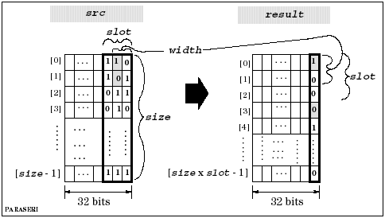

DSP_PARA_SERI
This API performs parallel-to-serial bit conversion.
For the specified bits (width) of the specified src elements (size), DSP_PARA_SERI stores each bit into bit 0 of the result elements.
The slot specifies the number of serial bits that will result for each src element. So, if slot > width, then slot - width zeros are added.
The following figure shows the parallel-to-serial bit conversion by DSP_PARA_SERI:

This API is defined in the header file /opt/hp93000/soc/prod_com/include/MAPI/libdsp.h.
Syntax
DSP_PARA_SERI(ARRAY_I& src, ARRAY_I& result,
INT width, INT slot);
DSP_PARA_SERI(INT *src, INT *result, INT size,
INT width, INT slot);I/O |
Parameter |
Description / Range |
|---|---|---|
I |
src |
Source array |
O |
result |
Result array |
I |
size |
Number of elements to be processed 1 ≤ size ≤ 2097152 size ≤ (size of src) size ∞ slot ≤ (size of result) |
I |
width |
Number of slot bits that are valid slot ≥ width |
I |
slot |
Number of bits for one conversion slot ≥ width |
Example
INT source[2], result[8];
.
.
DSP_PARA_SERI (source, result, 2, 2, 4);DSP_PARA_SERI stores the rightmost two bits of each source element into bit 0 of two result elements. After each element of source is processed, DSP_PARA_SERI stores 0 into bit 0 of two result elements.
For example, if source has the following elements:
source[0]=0...01101
source[1]=0...01011
Then, DSP_PARA_SERI stores the following into result :
result[0]=0...00
result[1]=0...01
result[2]=0...00
result[3]=0...00
result[4]=0...01
result[5]=0...01
result[6]=0...00
result[7]=0...00